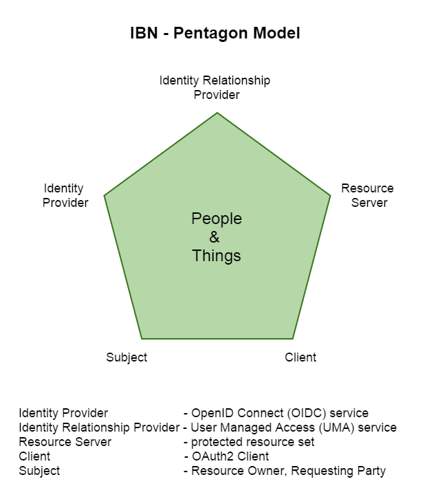
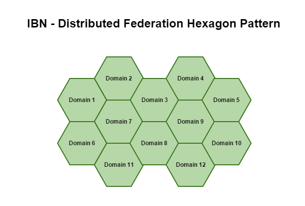
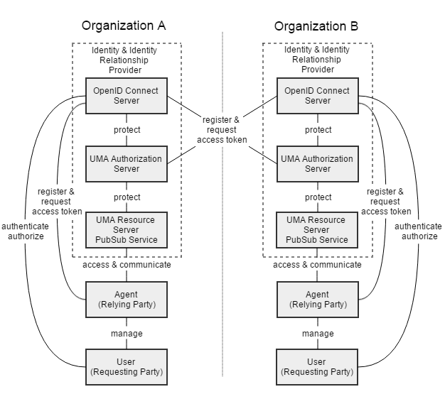
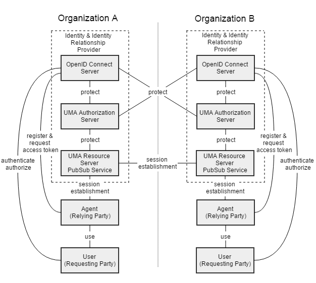

Identity-Based Network
Identity-Based Network (IBN) Architecture
The Internet of Everything is a complex interconnection of people, processes, software and hardware with unique identifiers and the ability to exchange data. The networking industry has to agree on how to assemble the trusted, secure infrastructure for connecting those various entities.
The IBN architecture that is built on top of the WebRTC network can be thought of as a network of trust identities.
IBN - Conceptual Architecture

The Identity Relationship Provider (IdRP) is a trusted place that, after credential validation, issues identity relationship information and where relationship management takes place.
The UMA authorization server acts as an OpenID Connect Relying Party. The Publish-Subscribe service is known as a "protected resource" and can be integrated into the UMA service or run on an external Resource Server. The UMA authorization server controls, via Publish-Subscribe service, relationships between users, agents and between users and agents.
The Agent, can be for example, the User Agent, Hub Agent, File Transfer Agent or the Internet of Things Agent (Home Health Monitoring, Refrigerator etc.).
IBN - Distributed Federation Hexagon Model
IBN - Distributed Federation Hexagon Pattern

This trust-to-trust communication between all parties can be divided into six phases.
IBN communication - Phase I-III. register, get authorization, set up a relationship 
IBN communication - Phase IV-V. get authorization, session establishment 
IBN communication - Phase VI. exchange data
The WebRTC peer-to-peer technology in combination with federated Identity and Identity Relationship Providers creates a composite IBN architecture that meets the needs of the Internet of Everything ecosystem.
This architecture does not add an extra layer to the network stack, it is a pure combination of existing systems and technologies and thus the overhead added by IBN architecture to the existing network infrastructure is negligible.
An identity-based network communication approach is a better fit for the distributed nature of cloud computing and has intrinsic privacy-preserving properties.
IBN - Use-case domains:
- Health
- Financial
- Education
- Personal
- Government
- Media
- Enterprise
- Web
- Mobile
- API
- Internet of Things